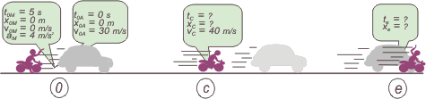

NO ME SALEN
PROBLEMAS RESUELTOS DE FÍSICA DEL CBC
(Movimiento uniformemente variado)
|
|

|
 |
3.15- Un automóvil pasa frente a un puesto caminero,
moviéndose con velocidad constante de
108 km/h, en una ruta rectilínea. Un policía parte
en su motocicleta desde el puesto, 5 segundos
más tarde, con una aceleración constante de
4 m/s² hasta llegar a su velocidad máxima
(144 km/h), que luego mantendrá constante. ¿A
qué distancia del puesto se cruzará con el automóvil?
Trazar los gráficos correspondientes. |
|
Imaginate dónde, en qué lugar se equivoca el 78,3% de los estudiantes cuando plantean este problema... Te lo digo yo: en el asunto de los 5 segundos. ¿Y todo por qué? Mirá, hay varios motivos, vamos a analizarlo un poquito porque me parece importante; pero el primero y principal es que no hacen esquemas.
| | |
|  |
|
| cuando armás un esquema al mismo tiempo estás eligiendo un Sistema de Referencia |
|
| Ahora vamos a armar las ecuaciones horarias. Tenés que tener los modelos a mano, ¿los tenés? Fijate, además, que el auto tiene un solo tipo de movimiento, un MRU. En cambio la moto tiene dos movimientos, uno a continuación del otro. El primero es un MRUV, el segundo un MRU. No sabemos cuándo comienza ese segundo movimiento de la moto, pero a ese evento lo llamé C (por cambio), y el instante ese, entonces, se llama tC aunque no sepamos cuánto vale. |
| auto |
x = 30 m/s . t |
|
Estas son las ecuaciones que describen TODO el movimiento de ambos móviles. No hablan sólo de las situaciones que a vos te interesan, hablan de los infinitos instantes que transcurren durante el movimiento. |
| moto MRUV |
x = 2 m/s² (t — 5s)² |
|
| |
v = 4 m/s² (t — 5s) |
|
| moto MRU |
x = xc + 40 m/s (t — tc) |
|
| Ahora que tenemos las herramientas que describen todo el movimiento... las usamos: les pedimos que hablen de los puntos interesantes... aquellos donde hay datos o incógnitas, por ejemplo c, e... |
 |
xe = 30 m/s . te |
[1] |
(ec. de auto habla de e) |
| xc = 2 m/s² (tc — 5s)² |
[2] |
(ec. de moto habla de c) |
| 40 m/s = 4 m/s² (tc — 5s) |
[3] |
(ec. de moto habla de c) |
| xe = xc + 40 m/s (te — tc) |
[4] |
(ec. de moto habla de e) |
Me lo temía... desembocamos sin quererlo en un sistema de tantas ecuaciones como incógnitas (4x4), esto tiene solución. Y eso quiere decir que acá terminó la física, y lo que viene es álgebra... qué porquería. Pero bueno, una vez más se ve que el método es infalible.
De la [3]
(tc — 5s) = 40 m/s / 4 m/s²
tc = 15 s
meto esto en la [2]
xc = 2 m/s² (15 s — 5s)²
xc = 200 m
Ahora igualo la [1] con la [4] pero le meto adentro tc y xc que ya conozco
30 m/s . te = 200 m + 40 m/s (te — 15s)
30 m/s . te = 200 m + 40 m/s te — 600 m
— 10 m/s . te = — 400 m
te = 40 s
ahora voy con este valor a la [1] y a la [4] para verificar que en las dos me da lo mismo, y efectivamente... |
|
|
|
| |
|
|
| Tengo que hacer los gráficos, porque los pide el enunciado. Y si no los pidiese tendría que hacerlos de todas formas. Como siempre... en tándem. |
|
|
 |
|
 |
| Algunos derechos reservados.
Se permite su reproducción citando la fuente. Última actualización dic-06. Villa Pueyrredón, Ciudad de Buenos Aires, Argentina. América Latina, Planeta Tierra, Sistema Solar, Galaxia Vía Láctea, Universo. |
|
|
| | | |
|